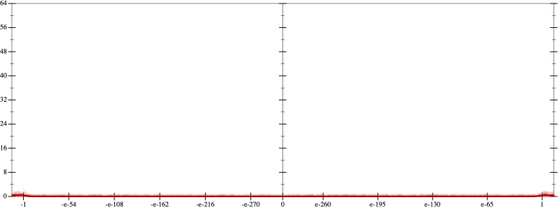
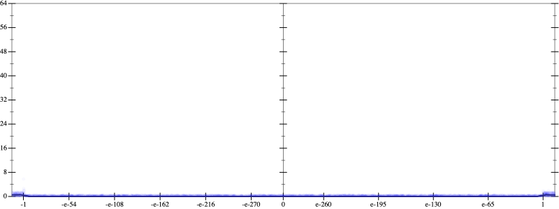
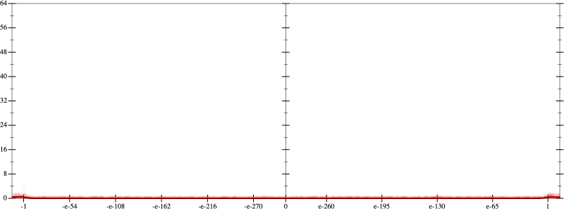
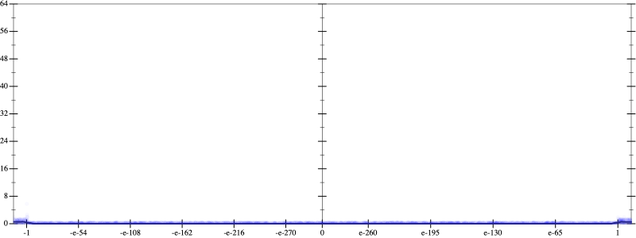
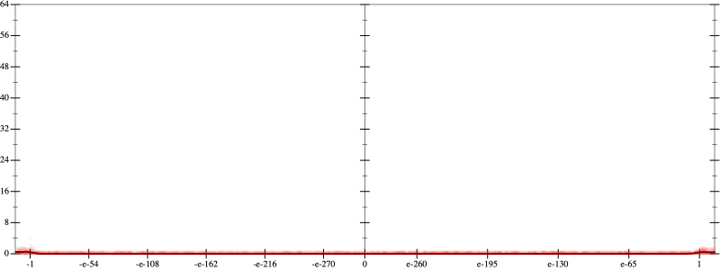
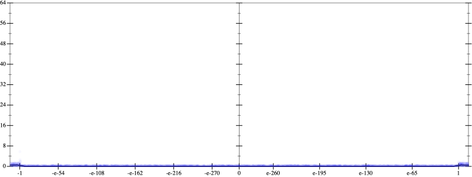

Error
 
Bits error versus x
Bits error versus x
Results
Initial program 0.0
Applied simplify0.0
rmApplied cube-mult0.0
Applied associate-*r*0.0
Time bar (total: 23.2s)Debug log
herbie shell --seed 1968400270
(FPCore (x)
:name "4"
:pre (and (>= x -1e+14) (<= x 1e+14))
(+ (+ 12.0 (* -48.0 (* x x))) (* 16.0 (* (* (* x x) x) x))))